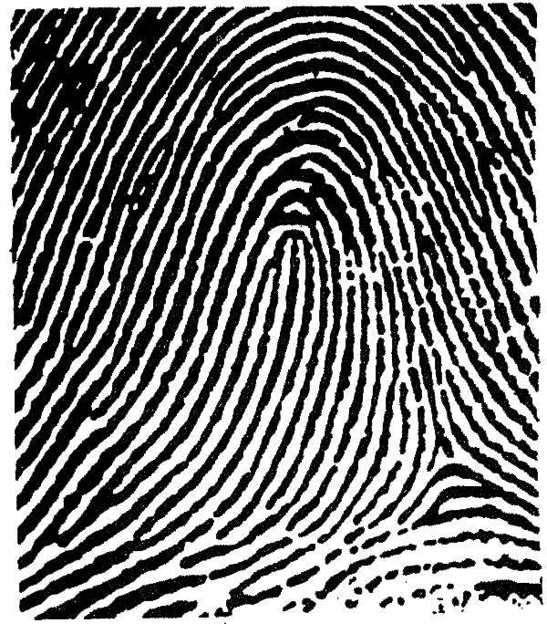
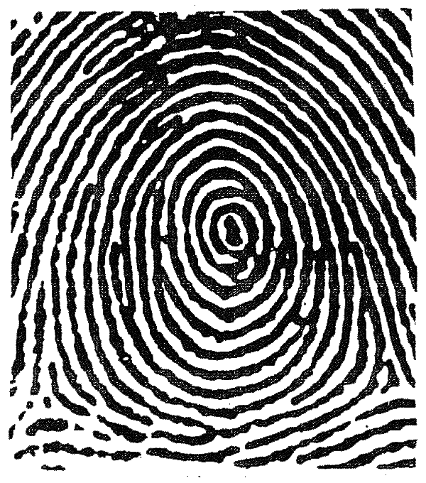
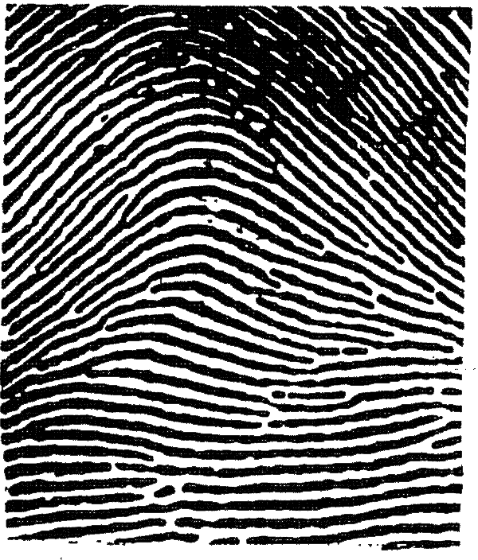
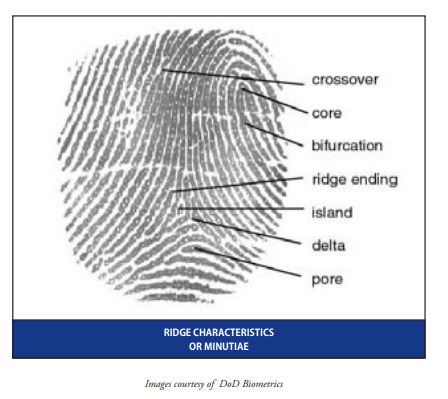

Fingerprints are unique patterns, made by friction ridges (raised) and furrows (recessed), which appear on the pads of the fingers and thumbs. Prints from palms, toes and feet are also unique; however, these are used less often for identification, so this guide focuses on prints from the fingers and thumbs.
The fingerprint pattern, such as the print left when an inked finger is pressed onto paper, is that of the friction ridges on that particular finger. Friction ridge patterns are grouped into three distinct types—loops, whorls, and arches—each with unique variations, depending on the shape and relationship of the ridges:
Loops - prints that recurve back on themselves to form a loop shape. Divided into radial loops (opening toward the radius bone, or thumb) and ulnar loops (opening toward the ulna bone, or pinky), loops account for approximately 60 percent of pattern types.

Distinguishing Between a Right Loop and Left Loop Pattern
Whorls - form circular or spiral patterns, like tiny whirlpools. There are four groups of whorls: plain (concentric circles), central pocket loop (a loop with a whorl at the end), double loop (two loops that create an S-like pattern) and accidental loop (irregular shaped). Whorls make up about 35 percent of pattern types.

Arches - create a wave-like pattern and include plain arches and tented arches. Tented arches rise to a sharper point than plain arches. Arches make up about five percent of all pattern types.

The two underlying premises of fingerprint identification are uniqueness and persistence (permanence). To date, no two people have ever been found to have the same fingerprints—including identical twins. In addition, no single person has ever been found to have the same fingerprint on multiple fingers.
Persistence, also referred to as permanence, is the principle that a person’s fingerprints remain essentially unchanged throughout their lifetime. As new skin cells form, they remain cemented in the existing friction ridge and furrow pattern. In fact, many people have conducted research that confirms this persistency by recording the same fingerprints over decades and observing that the features remain the same. Even attempts to remove or damage one’s fingerprints will be thwarted when the new skin grows, unless the damage is extremely deep, in which case, the new arrangement caused by the damage will now persist and is also unique.
Analysts use the general pattern type (loop, whorl or arch) to make initial comparisons and include or exclude a known fingerprint from further analysis. To match a print, the analyst uses the minutiae, or ridge characteristics, to identify specific points on a suspect fingerprint with the same information in a known fingerprint. For example, an analyst comparing a crime scene print to a print on file would first gather known prints with the same general pattern type, then using a loupe, compare the prints side-by-side to identify specific information within the minutiae that match. If enough details correlate, the fingerprints are determined to be from the same person.
(Source: http://www.forensicsciencesimplified.org/prints/principles.html)

The following video goes into greater detail about how fingerprints form: